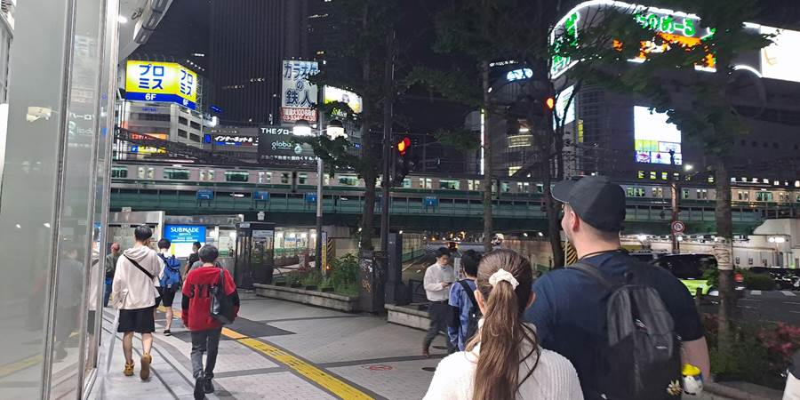

Dan drugi: Pogrešna kapija i Tokyo’s "Golden Poo" Building
Krenuli smo u obilazak. Htedoh da napišem jutros, ali smo odvalili do 16h sa spavanjem. Nije mala stvar doći na kraj sveta. Umorili smo se. A i legli smo oko 4h ujutru.
Luka i Kristina su otišli i kupili adaptere u pola četiri dok smo Petar i ja još spavali. Uglavnom, oko 17h smo krenuli u obilaske. Lep je dan, pa rekoh bolje onda neka priroda, hram.
Pitali smo nasumičnog čoveka na ulici za pravac i on je 15 minuta šetao sa nama do stanice. Da nas odvede. Pokazao nam je kako se kupuju karte.
Gledaš na velikoj svetlećoj mapi dokle ideš, sa sve presedanjima i koliko košta, i na aparatu biraš taj iznos. Gurneš kartu, otvore se vrata da prođeš, sa druge strane pokupiš kartu.
Kristini baš taj prvi put progutana karta koja je potrebna za izlazak iz stanice. Naš čika je zvao zaposlenog koji je rastavio ta vrata i vratio Kristini kartu. Baš je lepo brinuo o nama.
Još jedan primer japanskog gostoprimstva. Slikala sam se sa njim. I sa jednom slatkom curicom. Slikala sam i dve slatke devojke.
Lepo ih pitam na japanskom da li smem da ih slikam, one kažu smeš, ispoziraju i eto.
Nema tako puno stranih turista. Čak mi i nije neka gužva, očekujući je za Golden Week (za 1. maj).
Otišli smo do Meiji Shrine koji je u pravoj šumi usred centra Tokija. Našla sam mama Irenkinu sliku tu pa sam poželela i mi tu da se slikamo. I slikali smo se.
I bila sam jako srećna. Kod Tori kapije koja vodi u šumu. Kasnije sam videla da to nije prava kapija sa slike. Prava je u Niku. Ali tada sam mislila da jeste i bila sam srećna.
Šetali smo kroz šumu sa dosta autentičnih japanskih detalja kao što je i zid od buradi za sake alkoholno piće.
Do hrama nismo stigli, zatvorili su. U Harajuku oblasti je Luka kupio Kristini šarenu šećernu vunu. Jer je Harajuku kawaii (cute, fluffy).
Kupili smo i ičigo (jagode) na štapiću koje na licu mesta ušećere. Ja ne znam kakve mi jagode jedemo ali ove su kao i u Belgiji prave jagode sa ukusom jagode. Predivne.
Petar je pitao možemo li nekako seme da ponesemo. Prošetali smo čuvenom Takeshido ulicom. Deci smešno i zapamtili su kao Take a shit.
Bila je ogromna prodavnica sa lopticama i u loptici igračkica iznenađenje. Likovi iz raznih crtaća i stripova. Takve su bile i u Budvi i kupovali smo kad su deca bila mala.
Ko bi reko, to je nešto vrlo in (moderno) i bilo im je zabavno. I dosta odraslih je bilo tamo. Da kupe igračkice.

Ulazili smo u razne prodavnice sa kawaii (slatkim, simpatičnim) stvarima. Došli smo do ulice koja je ekvivalent Petoj aveniji. Široka, velike zgrade, poznate prodavnice.
Bacili pogled niz nju i vratili se. Bio je jedan 3D bilbord, naš prvi u Japanu.
U povratku su deca ostala u ogromnoj robnoj kući za tehniku u Akihabari, našoj četvrti, a mene su poslali kući.
Prati plave tačkice na google maps. Jeste, al kako sam se odvojila od njih, interneta ne, interneta nema. Ostao kod Petra koji nam je delio.
Sreća pa Japanaca koji hoće da pomognu, ima. Nisam se plašila jer znam kako se zove taksi, mahneš mu rukom na ulici dok prolazi.
Papir sa adresom hotela nosim sa sobom. A postoje i neke prastare telefonske govornice gde ima besplatnog interneta, staneš, obaviš i ideš dalje.
Naš kraj je u neboderima, ali počinjem da mu osećam ritam. I prija mi. Kultura. Neguranje. Ljubaznost. Super organizovanost. Tišina u vozu. Poštovanje tuđeg prostora.

Pa i grejana daska za WC šolju. Ne znam kako ću dalje bez nje.
Najveći grad na svetu. Preko 30 miliona stanovnika. Sve radi kao satić. Sve prečisto. Iako nema ni jedne kante na ulici. Ili baš zato.
Preveliko a savladivo. Srećna sam. Prija mi ovde. Deca su dobra.
Stigli su u hotel. Oni se naravno nisu gubili. Idemo opet da slikamo Senso ji hram.
Slikali smo, Luka je zadovoljan. Nije više tužan što je izgubio slike.
Okušali smo sreću što je fora kod hramova. Platiš, ubaciš novčić u rupicu, jer ti veruju da ćeš tako uraditi, nema nikoga da proverava jesi li platio.
Izvukli smo štapić sa brojem pa iz fiokice sa tim brojem, papirić sa tekstom. Petar i ja smo izvukli lošu sreću a Kristina i Luka dobru sreću.
Ko izvuče lošu sreću, veže je i ostavi im i tako se spase. Ostani ti tu loša srećo a ja odoh.
Prošetali smo i do Tokyo Skytree. On je uz reku Sumedu koja miriši na more.
Videli smo i znamenitost Tokija, zgradu govno. Tako su je nazvali. Pretpostavljam da to nije bila ideja ali se sa Japancima nikad ne zna.
Saznala sam kasnije da je to zlatno trebalo da predstavlja plamen, plameno srce piva. Ta zgrada je od fabrike piva. Međutim plamen im ličio na govno.
U 7 Eleven prodavnici smo našli smrznuto voće i aparat za smuti i napravili smo smuti kao pravi influenseri. Dopalo nam se pa smo kasnije to svaki dan radili.
Nema apoteka na svakom koraku, kockarnica, kafića. Petar je primetio da niko ne puši. Nema pekara u okolini. Sviđa nam se njihova hrana, za sada.
Kada smo bili u Senso ji hramu, bar pet puta nam se desilo kad vide da se slikamo, samo skrenu u paralelnu ulicu. Obzirni su, da ne smetaju.
Videli smo kafiće sa kućnim ljubimcima. Kučićima i mačkama za sada. Japanci nemaju vremena za ljubimce pa idu u takve kafiće da ih maze i poigraju se sa njima.
Generalno smo začuđeni kako nema noću ni ljudi ni kola na ulicama. Ni pasa ni mačaka. Možda i nije neobično jer smo bili posle ponoći.
Taksisti voze prazni po gradu ako nekome zatreba. Japanci su next level. Prešli su igricu.
Njihova mikrotalasna se ne okreće unutra.
Ne propustite sledeću avanturu!
Kad Sandra krene u novi kraj sveta, vaš inbox prvi sazna. Prijavite se i stižu vam sve nove priče mejlom.